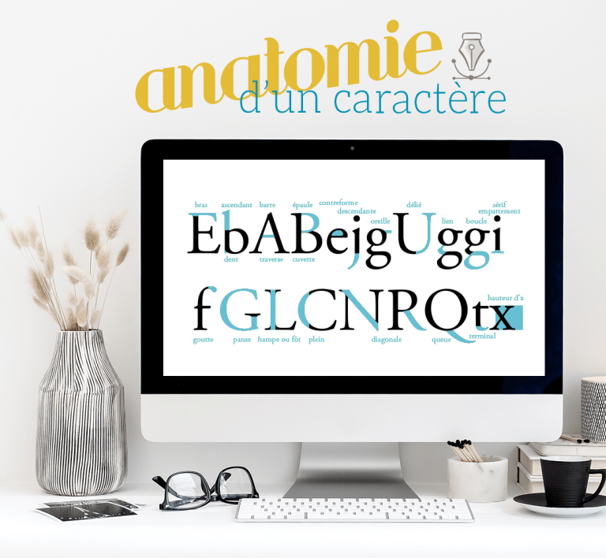

je suis lotyé
devellopeuse web et web mobile,

2016-2018: MCFD-TOGO Transit Declarant en Douane
2018-2020: MCFD-TOGO Developement communautaire
janvier 2022: SOLOLEARN Coding for Marketer
2022 : SIMPLON Developement web Web Mobile
Je m'appelle lotyé awesso .Je suis Togolaise ,je suis passionné des codes donc le devellopement web. j'aime experimenter ,decouvrir,et apprendre des nouvelles technologies. Dans ce portfolio,que j'ai realisé,je vais vous presenter mes competences
mon parcours ainssi que mes principales integrations en codes,en desingne puis en application Mobiles. pour toutes questions,n'hesiter pas a me contacter :)
 URL
 URL
URL
Grafisme:Figma
systeme: Git ,Git Hub
Editeurs de codes
HTML :
CSS:
JS:
systeme UNIX
PHP
World presse
MSQL
* Grande creactivité dans le desingne ainssi que des annimations elegantes et modernes
* Les projets principaux sont vraiment mis en avants
* Desingne minimaliste mais navigation tres simple a comprendre
* Aspect lucide des pages
* Toutes les parties du Sites qui ne sonts pas visibles dans la capture d'ecrant sont consacrés au projet realisés